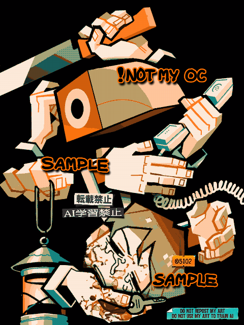
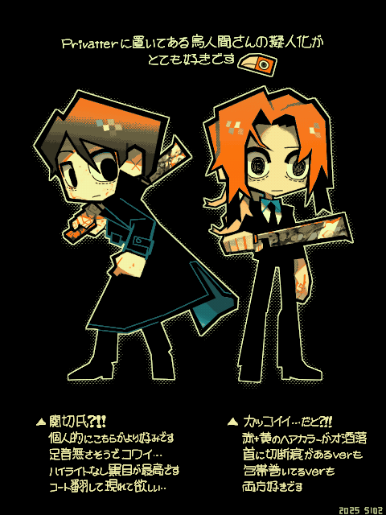
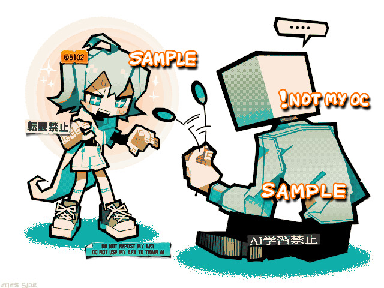

チュアブル(薬品C局)さんの「
THE OBJECT」というフリーゲームのファンアート。
気づいたら首を無くしていた主人公が、「自分の首」をもとめて屋敷を彷徨う…というゲームなのだが、頭部のオブジェクトを付け替えながらギミックを解いていくというシュールな異形頭要素がある。もう4年ほど前からこの作者さんのファンなのだが、久しぶりにファンアートを描いた。

▲これはPrivatterにて公開されていた某さんの擬人化…。むやみに擬人化見ないタイプだけど両方好きだったから描いた。公式の擬人化が2バージョンあるの良いな！

▲こっちは同じ作者さんの「
月が青い夜」というフリーゲームのファンアート。
こっちはまだ体験版だけど、THE OBJECTよりも作者さんの個性が目立っている。猫じゃらしにソワソワしてる女の子は主人公の仲間で、右側に座ってる男性が主人公。行く先々で出会う異形頭を「仲間にする」か「殺して首を奪う」か選ぶという
なかなかに残虐な選択肢を持った主人公。
私はもうTwitterやってないので、一か八か作者さんにメールで直接お渡ししたらとっても喜んでくれて「これぞインターネットの正しい楽しみ方だ…」と全身で感じた。メールでFA送り合うのって一番楽しい！！
2025/04/16
 THE OBJECT（Game）
THE OBJECT（Game）